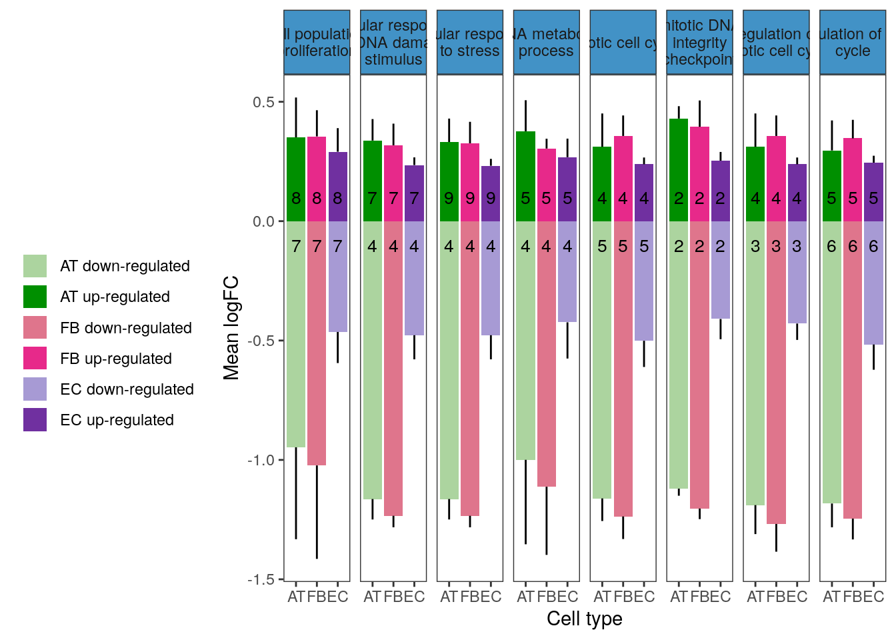
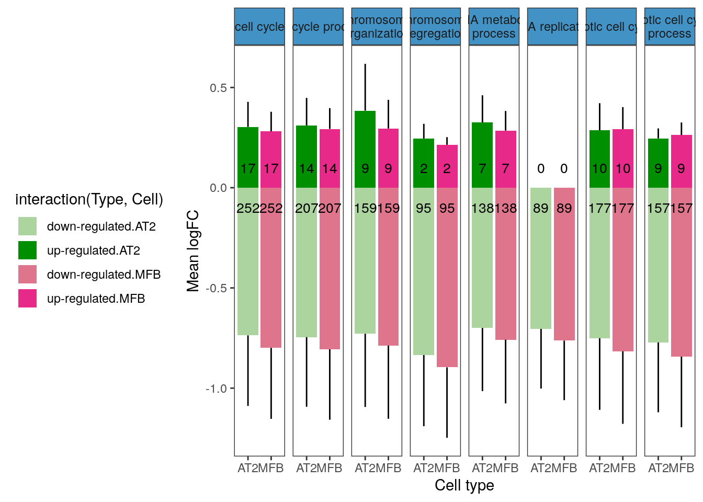

Last updated: 2025-08-28
Checks: 6 1
Knit directory: invitro/
This reproducible R Markdown analysis was created with workflowr (version 1.7.1). The Checks tab describes the reproducibility checks that were applied when the results were created. The Past versions tab lists the development history.
Great! Since the R Markdown file has been committed to the Git repository, you know the exact version of the code that produced these results.
Great job! The global environment was empty. Objects defined in the global environment can affect the analysis in your R Markdown file in unknown ways. For reproduciblity it’s best to always run the code in an empty environment.
The command set.seed(20250827) was run prior to running the code in the R Markdown file. Setting a seed ensures that any results that rely on randomness, e.g. subsampling or permutations, are reproducible.
Great job! Recording the operating system, R version, and package versions is critical for reproducibility.
Nice! There were no cached chunks for this analysis, so you can be confident that you successfully produced the results during this run.
Using absolute paths to the files within your workflowr project makes it difficult for you and others to run your code on a different machine. Change the absolute path(s) below to the suggested relative path(s) to make your code more reproducible.
| absolute | relative |
|---|---|
| /workspaces/invitro/invitro/data/ | data |
Great! You are using Git for version control. Tracking code development and connecting the code version to the results is critical for reproducibility.
The results in this page were generated with repository version 39f5039. See the Past versions tab to see a history of the changes made to the R Markdown and HTML files.
Note that you need to be careful to ensure that all relevant files for the analysis have been committed to Git prior to generating the results (you can use wflow_publish or wflow_git_commit). workflowr only checks the R Markdown file, but you know if there are other scripts or data files that it depends on. Below is the status of the Git repository when the results were generated:
Untracked files:
Untracked: code/cell_cycle.r
Untracked: code/common_genes.r
Untracked: code/deg_plots.r
Untracked: code/single_cell.r
Untracked: code/unique_genes.r
Untracked: data/220427_ATII_embedding.rds
Untracked: data/220427_EC_embedding.rds
Untracked: data/220427_MFB_embedding.rds
Untracked: data/G1S.txt
Untracked: data/G2M.txt
Untracked: data/Hyperoxia_AT.xls
Untracked: data/Hyperoxia_EC.xls
Untracked: data/Hyperoxia_MFB.xls
Untracked: data/bulk_seurat_endothelial.rds
Untracked: data/bulk_seurat_epithelial.rds
Untracked: data/bulk_seurat_stroma.rds
Untracked: data/inVivo_hyperoxia.xlsx
Untracked: et(frame,nsets = 20, nintersects = 15,
Unstaged changes:
Modified: README.md
Modified: _workflowr.yml
Modified: data/README.md
Modified: invitro.Rproj
Note that any generated files, e.g. HTML, png, CSS, etc., are not included in this status report because it is ok for generated content to have uncommitted changes.
These are the previous versions of the repository in which changes were made to the R Markdown (analysis/common_genes.Rmd) and HTML (docs/common_genes.html) files. If you’ve configured a remote Git repository (see ?wflow_git_remote), click on the hyperlinks in the table below to view the files as they were in that past version.
| File | Version | Author | Date | Message |
|---|---|---|---|---|
| Rmd | 39f5039 | jdhenaos | 2025-08-28 | workflowr::wflow_publish("analysis/*") |
| html | 5d60f00 | jdhenaos | 2025-08-27 | Build site. |
| Rmd | 171fca4 | jdhenaos | 2025-08-27 | wflow_publish("analysis/*") |
library(gprofiler2)
library(ggplot2)
library(ggrepel)
data.folder <- "/workspaces/invitro/invitro/data/"
set_base_url("https://biit.cs.ut.ee/gprofiler_archive3/e102_eg49_p15")
FCplotter = function(pathways, DEG){
# data is the dataframe containing only significant genes for a specific cell type
# pathway is a df of pathway ids/go ids that are statistically enriched from geneprofile
to.plot <- data.frame()
for(i in 1:nrow(pathways)){
res = gost(query = pathways[i,"term_id"], organism = "mmusculus")
gene_set = res$meta$genes_metadata$query$query_1$ensgs
to.plot <- rbind(to.plot,
data.frame(
Name=pathways[i,"term_name"],
mean_FC=c(mean(DEG[DEG$ensembl_gene_id %in% gene_set,]$log2FoldChange[DEG[DEG$ensembl_gene_id %in% gene_set,]$log2FoldChange > 0]),
mean(DEG[DEG$ensembl_gene_id %in% gene_set,]$log2FoldChange[DEG[DEG$ensembl_gene_id %in% gene_set,]$log2FoldChange < 0])),
Type=c("up-regulated","down-regulated"),
Set_size = c(length(DEG[DEG$ensembl_gene_id %in% gene_set,]$log2FoldChange[DEG[DEG$ensembl_gene_id %in% gene_set,]$log2FoldChange > 0]),
length(DEG[DEG$ensembl_gene_id %in% gene_set,]$log2FoldChange[DEG[DEG$ensembl_gene_id %in% gene_set,]$log2FoldChange < 0])),
SD=c(sd(DEG[DEG$ensembl_gene_id %in% gene_set,]$log2FoldChange[DEG[DEG$ensembl_gene_id %in% gene_set,]$log2FoldChange > 0]),
sd(DEG[DEG$ensembl_gene_id %in% gene_set,]$log2FoldChange[DEG[DEG$ensembl_gene_id %in% gene_set,]$log2FoldChange < 0]))
))
}
to.plot[is.nan(to.plot$mean_FC),"mean_FC"] <- 0
return(to.plot)
}raw.AT <- read.table(paste0(data.folder,"Hyperoxia_AT.xls"),sep = "\t",header = T,stringsAsFactors = F)
raw.EC <- read.table(paste0(data.folder,"Hyperoxia_EC.xls"),sep = "\t",header = T,stringsAsFactors = F)
raw.MFB <- read.table(paste0(data.folder,"Hyperoxia_MFB.xls"),sep = "\t",header = T,stringsAsFactors = F)
DEG.AT <- raw.AT[which(raw.AT$padj < 0.05),]
DEG.MFB <- raw.MFB[which(raw.MFB$padj < 0.05),]
DEG.EC <- raw.EC[which(raw.EC$padj < 0.05),]
common.genes <- Reduce(intersect,list(DEG.AT$ensembl_gene_id,DEG.EC$ensembl_gene_id,DEG.MFB$ensembl_gene_id))
common.gost <- gost(common.genes,organism = "mmusculus",sources=c("GO:MF", "GO:BP","GO:CC", "KEGG"))
common.BP <- common.gost$result[common.gost$result$source == "GO:BP",c("term_id", "source", "term_name", "p_value", "query_size", "term_size", "intersection_size")]
DEG.AT <- DEG.AT[which(DEG.AT$ensembl_gene_id %in% common.genes),]
DEG.EC <- DEG.EC[which(DEG.EC$ensembl_gene_id %in% common.genes),]
DEG.MFB <- DEG.MFB[which(DEG.MFB$ensembl_gene_id %in% common.genes),]
AT.plot <- FCplotter(pathways = common.BP,DEG = DEG.AT)
EC.plot <- FCplotter(pathways = common.BP,DEG = DEG.EC)
MFB.plot <- FCplotter(pathways = common.BP,DEG = DEG.MFB)
to.plot <- rbind(#AT.plot[which(AT.plot$Name == "cellular response to DNA damage stimulus"),],
#MFB.plot[which(MFB.plot$Name == "cellular response to DNA damage stimulus"),],
#EC.plot[which(EC.plot$Name == "cellular response to DNA damage stimulus"),],
AT.plot[which(AT.plot$Name == "cellular response to DNA damage stimulus" | AT.plot$Name == "cell population proliferation" |
AT.plot$Name == "regulation of cell cycle" | AT.plot$Name == "cellular response to stress" |
AT.plot$Name == "mitotic cell cycle" | AT.plot$Name == "mitotic DNA integrity checkpoint" |
AT.plot$Name == "DNA metabolic process" | AT.plot$Name == "regulation of mitotic cell cycle"),],
EC.plot[which(EC.plot$Name == "cellular response to DNA damage stimulus" | EC.plot$Name == "cell population proliferation" |
EC.plot$Name == "regulation of cell cycle" | EC.plot$Name == "cellular response to stress" |
EC.plot$Name == "mitotic cell cycle" | EC.plot$Name == "mitotic DNA integrity checkpoint" |
EC.plot$Name == "DNA metabolic process" | EC.plot$Name == "regulation of mitotic cell cycle"),],
MFB.plot[which(MFB.plot$Name == "cellular response to DNA damage stimulus" | MFB.plot$Name == "cell population proliferation" |
MFB.plot$Name == "regulation of cell cycle" | MFB.plot$Name == "cellular response to stress" |
MFB.plot$Name == "mitotic cell cycle" | MFB.plot$Name == "mitotic DNA integrity checkpoint" |
MFB.plot$Name == "DNA metabolic process" | MFB.plot$Name == "regulation of mitotic cell cycle"),])
to.plot$Name <- factor(to.plot$Name, levels=unique(to.plot$Name))
swr <- function(string, nwrap=20) {
paste(strwrap(string, width=nwrap), collapse="\n")
}
swr <- Vectorize(swr)
to.plot$Name <- swr(to.plot$Name)
to.plot$Cell <- c(#rep("AT2",2),rep("MFB",2),rep("EC",2),
rep("AT",16),rep("EC",16),rep("FB",16))
# rep("AT2",2),rep("EC",2))
to.plot$Cell <- factor(to.plot$Cell,levels = c("AT","FB","EC"))
to.plot$Name <- as.factor(to.plot$Name)
ggplot(to.plot, aes(x = mean_FC, y = Cell, fill = interaction(Type,Cell) )) + ylab("Cell type") + xlab("Mean logFC") +
geom_bar(stat = "identity",size=2) + scale_fill_manual(name = "", labels = c("AT down-regulated", "AT up-regulated",
"FB down-regulated", "FB up-regulated",
"EC down-regulated", "EC up-regulated"),values = c("#ACD49F","#008F00","#DF758C","#E7298A","#A79AD4","#7030A0"),aesthetics = "fill") +
facet_grid(cols = vars(Name)) + theme_bw() + theme(axis.line = element_blank(),
panel.grid.major = element_blank(),
panel.grid.minor = element_blank(),
panel.background = element_blank()) +
theme(legend.position = "left",
legend.direction = "vertical") + theme(strip.background =element_rect(fill="#4292C6")) +
geom_text(aes(label = Set_size, x = ifelse(mean_FC < 0,-0.1, 0.1) ),size = 3.5) +
geom_linerange(aes(xmin=ifelse(mean_FC < 0,mean_FC - SD, mean_FC), xmax=ifelse(mean_FC > 0,mean_FC + SD, mean_FC) )) +
coord_flip()Warning: Using `size` aesthetic for lines was deprecated in ggplot2 3.4.0.
ℹ Please use `linewidth` instead.
This warning is displayed once every 8 hours.
Call `lifecycle::last_lifecycle_warnings()` to see where this warning was
generated.
| Version | Author | Date |
|---|---|---|
| 5d60f00 | jdhenaos | 2025-08-27 |
raw.AT <- read.table(paste0(data.folder,"Hyperoxia_AT.xls"),sep = "\t",header = T,stringsAsFactors = F)
raw.EC <- read.table(paste0(data.folder,"Hyperoxia_EC.xls"),sep = "\t",header = T,stringsAsFactors = F)
raw.MFB <- read.table(paste0(data.folder,"Hyperoxia_MFB.xls"),sep = "\t",header = T,stringsAsFactors = F)
DEG.AT <- raw.AT[which(raw.AT$padj < 0.05),]
DEG.MFB <- raw.MFB[which(raw.MFB$padj < 0.05),]
DEG.EC <- raw.EC[which(raw.EC$padj < 0.05),]
common.genes <- Reduce(intersect,list(DEG.AT$ensembl_gene_id,DEG.EC$ensembl_gene_id,DEG.MFB$ensembl_gene_id))
common.AT.MFB <- Reduce(intersect,list(DEG.AT$ensembl_gene_id,DEG.MFB$ensembl_gene_id))
common.genes <- common.AT.MFB[which(!common.AT.MFB %in% common.genes)]
common.gost <- gost(common.genes,organism = "mmusculus",sources=c("GO:MF", "GO:BP","GO:CC", "KEGG"))
common.BP <- common.gost$result[common.gost$result$source == "GO:BP",c("term_id", "source", "term_name", "p_value", "query_size", "term_size", "intersection_size")]
DEG.AT <- DEG.AT[which(DEG.AT$ensembl_gene_id %in% common.genes),]
DEG.MFB <- DEG.MFB[which(DEG.MFB$ensembl_gene_id %in% common.genes),]
AT.plot <- FCplotter(pathways = common.BP,DEG = DEG.AT)
MFB.plot <- FCplotter(pathways = common.BP,DEG = DEG.MFB)
to.plot <- rbind(#AT.plot[which(AT.plot$Name == "cellular response to DNA damage stimulus"),],
#MFB.plot[which(MFB.plot$Name == "cellular response to DNA damage stimulus"),],
#EC.plot[which(EC.plot$Name == "cellular response to DNA damage stimulus"),],
AT.plot[which(AT.plot$Name == "cell cycle" | AT.plot$Name == "cell cycle process" |
AT.plot$Name == "mitotic cell cycle" | AT.plot$Name == "mitotic cell cycle process" |
AT.plot$Name == "DNA replication" | AT.plot$Name == "chromosome segregation" |
AT.plot$Name == "DNA metabolic process" | AT.plot$Name == "chromosome organization"),],
MFB.plot[which(MFB.plot$Name == "cell cycle" | MFB.plot$Name == "cell cycle process" |
MFB.plot$Name == "mitotic cell cycle" | MFB.plot$Name == "mitotic cell cycle process" |
MFB.plot$Name == "DNA replication" | MFB.plot$Name == "chromosome segregation" |
MFB.plot$Name == "DNA metabolic process" | MFB.plot$Name == "chromosome organization"),])
#AT.plot[which(AT.plot$Name == "cellular response to stress"),],
#EC.plot[which(EC.plot$Name == "cellular response to stress"),])
to.plot$Name <- factor(to.plot$Name, levels=unique(to.plot$Name))
swr <- function(string, nwrap=20) {
paste(strwrap(string, width=nwrap), collapse="\n")
}
swr <- Vectorize(swr)
to.plot$Name <- swr(to.plot$Name)
to.plot$Cell <- c(#rep("AT2",2),rep("MFB",2),rep("EC",2),
rep("AT2",16),rep("MFB",16))
# rep("AT2",2),rep("EC",2))
to.plot$Cell <- factor(to.plot$Cell,levels = c("AT2","MFB"))
to.plot$Name <- as.factor(to.plot$Name)
ggplot(to.plot, aes(x = mean_FC, y = Cell, fill = interaction(Type,Cell))) + ylab("Cell type") + xlab("Mean logFC") +
geom_bar(stat = "identity",size=2) + scale_fill_manual(values = c("#ACD49F","#008F00","#DF758C","#E7298A"),aesthetics = "fill") +
facet_grid(cols = vars(Name)) + theme_bw() + theme(legend.position = "none",
strip.background =element_rect(fill="#C6DBEF")) +
theme(axis.line = element_blank(),
panel.grid.major = element_blank(),
panel.grid.minor = element_blank(),
panel.background = element_blank()) +
theme(legend.position = "left",
legend.direction = "vertical") + theme(strip.background =element_rect(fill="#4292C6")) +
geom_text(aes(label = Set_size, x = ifelse(mean_FC < 0,-0.1, 0.1) ),size = 3.5) +
geom_linerange(aes(xmin=ifelse(mean_FC < 0,mean_FC - SD, mean_FC), xmax=ifelse(mean_FC > 0,mean_FC + SD, mean_FC) )) +
coord_flip()
| Version | Author | Date |
|---|---|---|
| 5d60f00 | jdhenaos | 2025-08-27 |
sessionInfo()R version 4.4.0 (2024-04-24)
Platform: x86_64-pc-linux-gnu
Running under: Ubuntu 22.04.4 LTS
Matrix products: default
BLAS: /usr/lib/x86_64-linux-gnu/openblas-pthread/libblas.so.3
LAPACK: /usr/lib/x86_64-linux-gnu/openblas-pthread/libopenblasp-r0.3.20.so; LAPACK version 3.10.0
locale:
[1] LC_CTYPE=en_US.UTF-8 LC_NUMERIC=C
[3] LC_TIME=en_US.UTF-8 LC_COLLATE=en_US.UTF-8
[5] LC_MONETARY=en_US.UTF-8 LC_MESSAGES=en_US.UTF-8
[7] LC_PAPER=en_US.UTF-8 LC_NAME=C
[9] LC_ADDRESS=C LC_TELEPHONE=C
[11] LC_MEASUREMENT=en_US.UTF-8 LC_IDENTIFICATION=C
time zone: Etc/UTC
tzcode source: system (glibc)
attached base packages:
[1] stats graphics grDevices utils datasets methods base
other attached packages:
[1] ggrepel_0.9.6 ggplot2_3.5.2 gprofiler2_0.2.3 workflowr_1.7.1
loaded via a namespace (and not attached):
[1] plotly_4.11.0 sass_0.4.10 generics_0.1.4 tidyr_1.3.1
[5] bitops_1.0-9 stringi_1.8.7 digest_0.6.37 magrittr_2.0.3
[9] evaluate_1.0.4 grid_4.4.0 RColorBrewer_1.1-3 fastmap_1.2.0
[13] rprojroot_2.1.1 jsonlite_2.0.0 processx_3.8.6 whisker_0.4.1
[17] ps_1.9.1 promises_1.3.3 httr_1.4.7 purrr_1.1.0
[21] viridisLite_0.4.2 scales_1.4.0 lazyeval_0.2.2 jquerylib_0.1.4
[25] cli_3.6.5 crayon_1.5.3 rlang_1.1.6 withr_3.0.2
[29] cachem_1.1.0 yaml_2.3.10 tools_4.4.0 dplyr_1.1.4
[33] httpuv_1.6.16 vctrs_0.6.5 R6_2.6.1 lifecycle_1.0.4
[37] git2r_0.33.0 stringr_1.5.1 fs_1.6.6 htmlwidgets_1.6.4
[41] pkgconfig_2.0.3 callr_3.7.6 pillar_1.11.0 bslib_0.9.0
[45] later_1.4.4 gtable_0.3.6 glue_1.8.0 data.table_1.17.8
[49] Rcpp_1.1.0 xfun_0.53 tibble_3.3.0 tidyselect_1.2.1
[53] rstudioapi_0.17.1 knitr_1.50 farver_2.1.2 htmltools_0.5.8.1
[57] labeling_0.4.3 rmarkdown_2.29 compiler_4.4.0 getPass_0.2-4
[61] RCurl_1.98-1.14
sessionInfo()R version 4.4.0 (2024-04-24)
Platform: x86_64-pc-linux-gnu
Running under: Ubuntu 22.04.4 LTS
Matrix products: default
BLAS: /usr/lib/x86_64-linux-gnu/openblas-pthread/libblas.so.3
LAPACK: /usr/lib/x86_64-linux-gnu/openblas-pthread/libopenblasp-r0.3.20.so; LAPACK version 3.10.0
locale:
[1] LC_CTYPE=en_US.UTF-8 LC_NUMERIC=C
[3] LC_TIME=en_US.UTF-8 LC_COLLATE=en_US.UTF-8
[5] LC_MONETARY=en_US.UTF-8 LC_MESSAGES=en_US.UTF-8
[7] LC_PAPER=en_US.UTF-8 LC_NAME=C
[9] LC_ADDRESS=C LC_TELEPHONE=C
[11] LC_MEASUREMENT=en_US.UTF-8 LC_IDENTIFICATION=C
time zone: Etc/UTC
tzcode source: system (glibc)
attached base packages:
[1] stats graphics grDevices utils datasets methods base
other attached packages:
[1] ggrepel_0.9.6 ggplot2_3.5.2 gprofiler2_0.2.3 workflowr_1.7.1
loaded via a namespace (and not attached):
[1] plotly_4.11.0 sass_0.4.10 generics_0.1.4 tidyr_1.3.1
[5] bitops_1.0-9 stringi_1.8.7 digest_0.6.37 magrittr_2.0.3
[9] evaluate_1.0.4 grid_4.4.0 RColorBrewer_1.1-3 fastmap_1.2.0
[13] rprojroot_2.1.1 jsonlite_2.0.0 processx_3.8.6 whisker_0.4.1
[17] ps_1.9.1 promises_1.3.3 httr_1.4.7 purrr_1.1.0
[21] viridisLite_0.4.2 scales_1.4.0 lazyeval_0.2.2 jquerylib_0.1.4
[25] cli_3.6.5 crayon_1.5.3 rlang_1.1.6 withr_3.0.2
[29] cachem_1.1.0 yaml_2.3.10 tools_4.4.0 dplyr_1.1.4
[33] httpuv_1.6.16 vctrs_0.6.5 R6_2.6.1 lifecycle_1.0.4
[37] git2r_0.33.0 stringr_1.5.1 fs_1.6.6 htmlwidgets_1.6.4
[41] pkgconfig_2.0.3 callr_3.7.6 pillar_1.11.0 bslib_0.9.0
[45] later_1.4.4 gtable_0.3.6 glue_1.8.0 data.table_1.17.8
[49] Rcpp_1.1.0 xfun_0.53 tibble_3.3.0 tidyselect_1.2.1
[53] rstudioapi_0.17.1 knitr_1.50 farver_2.1.2 htmltools_0.5.8.1
[57] labeling_0.4.3 rmarkdown_2.29 compiler_4.4.0 getPass_0.2-4
[61] RCurl_1.98-1.14